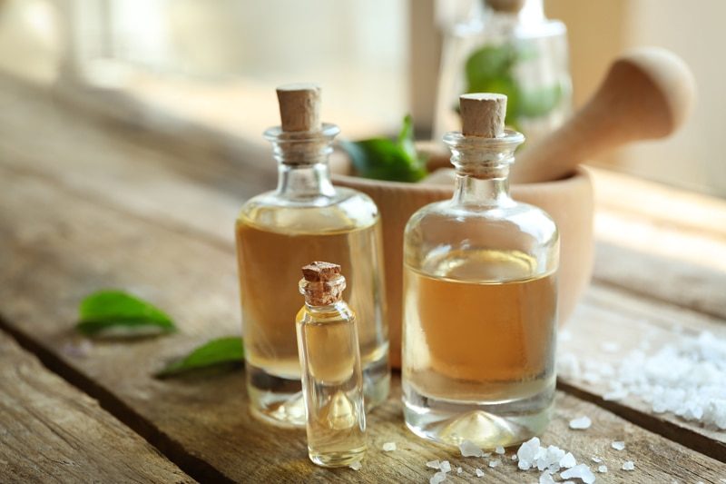

Using Extracts and Flavorings
What is the difference between extracts, flavorings, and essential oils? Unfortunately, many recipe designers loosely interchange these words, which can create disappointing results for the end maker of the recipes. Many extracts substitute well for each other. For instance, almond extract works instead of vanilla extract or lemon extract instead of lime extract. But some will alter the taste of your dish, so be sure the new flavor will complement the other ingredients in your recipe.

Not all extracts, flavorings, or essential oils are interchangeable across the board. Extracts are concentrated in flavor, have a watery consistency, but are less dominant than flavorings or essential oils. Flavorings have a thicker texture (like a syrup) and are more intense than extracts. I don’t care too much for using them because of how they are made. Essential oils are my favorite but require great awareness when using them. They are incredibly potent, so you have to be careful how you add them. You also need to know what oils are safe for internal use.
Extracts, Flavorings, and Oils are not the same.
Extracts
- To explain how extracts are made, let’s use the analogy of making a pot of coffee. Every time you brew coffee, you’re essentially creating an extract. In this case, that means running a solvent (water) through a product (ground coffee beans) to withdraw the flavor compounds producing an extract (the brewed coffee). Unlike your roasted coffee beans, however, the flavor compounds and essential oils found in most botanicals are not water-soluble, but rather oil-soluble.
- Alcohol is used with water to extract solvents and to keep the essential oils from separating. For this same reason, solvents are used to maximize the extraction of flavor compounds that aren’t water-soluble. Mose extracts contain propylene glycol (a liquid alcohol which is used as a solvent, in antifreeze, and in the food, plastics, and perfume industries) or polysorbate (Polysorbates are a class of emulsifiers used in some pharmaceuticals and food preparation).
- Extracts are less intense than oils and are added when you want the flavor to play in the background rather than take a starring role.
- You can search the Web and learn how to make your own extracts if that interests you.
Flavorings
- Natural flavors – The U.S. Food and Drug Administration requires natural flavors to be created from an edible source, such as vegetables, fruits, meat, poultry, dairy, herbs, and spices. Scientists, called flavorists, use derivatives of these products to create over 2,000 chemicals that make up 500 natural flavors. Interestingly, flavors may come from unexpected sources. For example, to create lemon flavoring, flavorists use the citral chemical found in lemon peel, lemongrass, or lemon myrtle. (1)
- Flavorists mix up 70 to 80 combinations of chemicals to get the exact smell and taste for natural and artificial flavorings. It truly is a science. So if you think you are getting real banana in that bottle of banana flavoring, you might want to guess again.
- Flavors typically contain preservatives, emulsifiers, solvents, and other “incidental additives,” which can make up 80% or so of the formulation. Some of the most common incidental additives in flavors include sodium benzoate, glycerin, potassium sorbate, and propylene glycol (none of which are labeled).
- If I use “flavors,” I get them from Medicine Flower. Their flavors are cold-processed using an extraction method without the use of any colorants, fillers, diluting agents, or preservatives. They are wildcrafted or sustainably grown and non-GMO. Best of all they are in water and oil-soluble bases, and they don’t contain any sugar, calories, and are wheat- and gluten-free. You still have to watch their ingredients if you are 100% vegan.
Side Note – Artificial Favoring
- If you ever pick up a bottle of extracts or flavoring and it reads, “artificial,” put it down, back away slowly, and depart the aisle.
- Artificial flavors – Flavorists make artificial flavors by combining chemicals made from inedible ingredients, such as paper pulp or petroleum. Artificial flavors are made to smell and taste exactly like natural flavorings. They also must pass stricter safety testing. But even so, organic purists believe that artificial flavors can cause a host of health problems. (1)
Essential Oils
- Not all essential oils are created equally. Many companies compromise them by adding synthetics, contaminants, or cheap fillers, or by using unethical production practices. Look for brands that extract the oils through careful steam distillation and cold-pressing, resulting in the purest essential oils.
- Oils are more concentrated, pure-tasting, and come with nutritional benefits where flavors and extracts don’t.
- In chocolate making, essential oils are great to add because they are oil-based whereas water-based flavorings do not work as well.
- If you want the flavor to be more pronounced with a healthy kick added, reach for oils. A good rule of thumb is 1 teaspoon of extract = 1-3 drops of oil.
Below, I will touch base on some of the basic extracts and flavors that you commonly find in pantries. The descriptions are based on what the local grocery store sells, not Medicine Flower (which I recommended them above) since it is an online company and most people don’t have a stock of their flavors in the pantry.
Almond Extract
Store-bought Version
- The flavor of almond extract has a sweet, nutty essence.
- It is often used in small amounts (about a half a teaspoon per batch).
- It is an added ingredient to many recipes made for crackers, cookies, bars, bread, marzipan, and French toast.
- Ingredients: Water, Alcohol (36%), and Benzaldehyde.
Ingredients to use in its place:
- How strongly do you want the almond flavor to shine through? Are there almonds already in the recipe? If so, a little salt and vanilla can help bump up the almond flavor.
- If you need an intense almond flavor, then stick to almond extract.
Anise Flavor
Store-bought Version
- Anise is sweet and very aromatic and has a flavor like licorice.
- It adds a licorice twist to cookies, cakes, candies, teas, and coffees.
- Ingredients: Alcohol (68%), Water, and Oil of Anise.
Ingredients to use in its place:
- Tarragon – Some say that it reminds them of licorice.
- Sweet basil tastes a little bit like licorice too.
- Ground fennel seed is my go-to. For example, try my Oldfather Fennel Candy or Licorice Logs.
Butter Flavor
Store-bought Version
- Cooks use it to amplify the buttery taste without adding more fat or even using butter.
- Ingredients: Soybean Oil, Natural and Artificial Flavors, and Lactic Acid.
Ingredients to use in its place:
- Walnuts and macadamia nuts (mixed or alone) = buttery flavor.
Butterscotch Flavor
Store-bought Version
- Traditional butterscotch flavoring sold in the store replicates the taste of sugar and butter cooked together.
- Ingredients: Organic compatible alcohol, Water, and Natural butterscotch flavors.
Ingredients to use in its place:
- Mesquite powder + coconut crystals + vanilla = butterscotch flavor
- Medjool dates + vanilla = butterscotch flavor
- Lucuma powder + dried apricots = butterscotch flavor
Chocolate Extract
Store-bought Version
- Chocolate extract (pure chocolate extract) is a flavoring made by soaking cocoa beans in alcohol.
- Sweet chocolate extract enhances raw chocolate milkshakes, puddings, and cheesecakes.
- Ingredients: Chocolate extract is made by infusing an alcohol solution with cocoa beans.
- It comes in water or dairy-soluble agave syrup, alcohol, and water base.
Ingredients to use in its place:
- 1 tablespoon Chocolate Extract = 1 tablespoon unsweetened raw cacao powder.
- Adding a bit of coffee (liquid or powder) to chocolate desserts will amplify the chocolate flavor.
- If you don’t have chocolate extract, you can replace it with vanilla extract along with the use of raw cacao powder or cacao butter.
Lemon Flavor
Store-bought Version
- Lemon flavor adds a stronger lemon flavor than lemon juice.
- It comes in an oil-soluble canola oil base.
- Ingredients: Alcohol (84%), Water, and Oil of Lemon.
Ingredients to use in its place:
- 1 tsp lemon extract = 1 drop lemon essential.
- 1 tsp lemon extract = 2 teaspoons of lemon zest.
Peppermint Extract
Store-bought Version
- Peppermint flavoring is widely used in beverages and sweet treats.
- It comes in an oil-soluble sunflower seed oil base.
Ingredients to use in its place:
- 1 tsp peppermint extract = 1/4 tsp essential oil at the most; you may need less.
- 1 drop peppermint essential oil = 1 tsp dried mint leaves.
- 1 drop peppermint essential oil = 1 Tbsp fresh mint leaves.
Vanilla Extract
Store-bought Version
- It adds a distinct yet subtle flavor to almost any recipe.
- Vanilla extract comes from vanilla beans that have been steeped in alcohol.
- It comes in water or dairy-soluble water and alcohol base.
Ingredients to use in its place:
- 1 Tbsp vanilla extract = 1 vanilla bean.
- 1 Tbsp vanilla extract = 1 Tbsp maple syrup.
- 1 tsp vanilla extract = 1 tsp vanilla powder.
- 1 tsp vanilla extract = 1/2 tsp almond extract.
© AmieSue.com